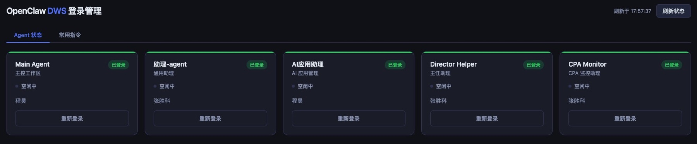
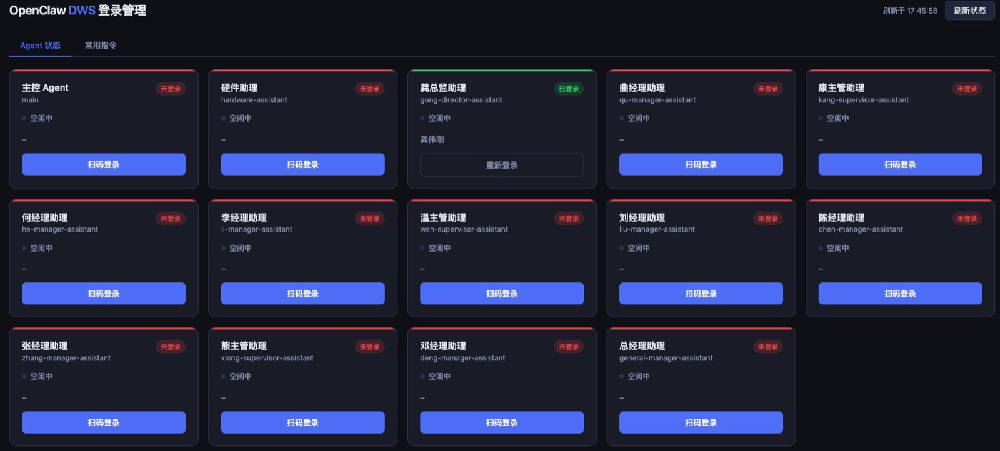
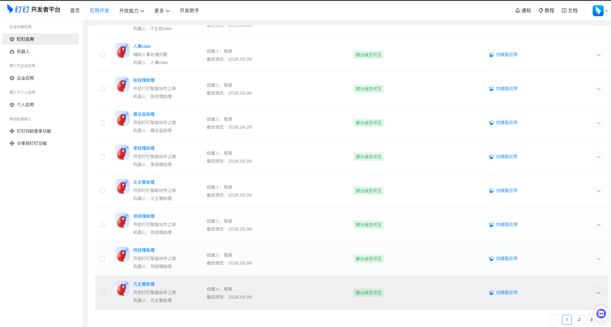
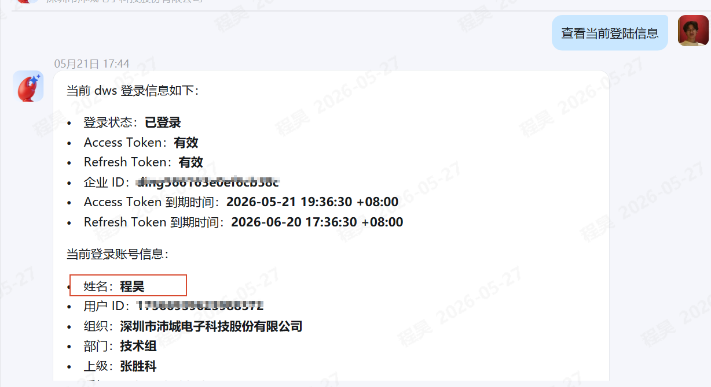

已部署内部看板
Openclaw 智能体监控平台
Openclaw 智能体监控平台是软件部围绕钉钉智能体建设的内部运行看板。前期团队基于 Openclaw 开发了钉钉智能体能力，该平台用于集中查看 Agent 登录状态、任务处理状态、常用指令模板和部署情况，帮助开发同事定位问题，也帮助业务同事了解钉钉智能体服务是否稳定。
集中展示多台 Mac 上 OpenClaw Agent 的钉钉登录状态、使用状态和最近刷新结果，快速判断服务是否正常。
通过进程监控区分使用中和空闲中 Agent，帮助团队了解当前哪个 Agent 正在处理钉钉消息。
沉淀钉钉机器人对话中的常用提示词模板，支持搜索和一键复制，降低使用门槛。
功能概览
自动读取每个 Agent 的 dws token，展示钉钉登录账号姓名，并每 60 秒刷新一次状态。
通过进程监控判断哪个 Agent 正在处理钉钉消息，使用中状态以橙色脉冲提示。
点击登录按钮后，后台自动清理 app.json 并解锁 keychain，生成二维码后可直接在页面扫码授权，无需命令行操作。
查看 Agent 登录、使用、空闲和异常情况，结合部署信息完成钉钉智能体运行复盘。
常用指令
把高频提示词整理成可复制模板
平台整理了钉钉机器人对话中常用的提示词模板，点击任意卡片可一键复制，粘贴到钉钉对话框直接使用，并支持关键词搜索。
用于方案、说明、总结、制度和项目材料的初稿生成与润色。
用于表格解读、指标归因、异常分析和数据结论整理。
用于通知、邮件、钉钉消息和对外沟通内容的整理。
用于会议纪要、议程安排、行动项和待办事项整理。
用于资料检索、上下文整理、问题归纳和知识查询。
用于任务拆解、责任人梳理、进度跟踪和风险提醒。
平台截图
主要界面预览




部署情况
当前平台分为软件部专用和其他部门专用两个入口，均已配置开机自启和异常自动重启，局域网内可直接访问。
适用对象
平台面向公司内部使用，不要求普通同事自行部署。不同角色可根据关注点查看对应运行数据和问题线索。
| 使用对象 | 可以查看什么 | 使用价值 |
|---|---|---|
| 软件部开发同事 | Agent 登录、处理状态、异常记录 | 定位钉钉智能体运行问题 |
| AI 应用负责人 | Agent 使用、服务状态、部署范围 | 评估智能体稳定性和效果 |
| 业务部门同事 | 服务状态、常用指令、运行情况 | 确认钉钉智能体可用 |
| 平台运维/管理同事 | 部署范围、Agent 数量、自动重启 | 支撑运行巡检和问题跟踪 |
访问与使用
开发、调试和联调进入开发专用平台；业务查看和反馈进入其他部门专用平台。
先确认 Agent 是否登录、当前是使用中还是空闲中，以及页面最近一次刷新时间。
如果 Agent 未登录，可点击登录按钮生成二维码，在页面扫码完成授权。
按场景搜索常用指令模板，一键复制后粘贴到钉钉机器人对话框使用。
常见问题
| 问题 | 说明 |
|---|---|
| 不知道访问哪个入口 | 开发调试使用开发专用平台，业务部门查看使用其他部门专用平台。 |
| Agent 显示未登录 | 可点击登录按钮生成二维码，按页面提示扫码授权。 |
| Agent 一直显示使用中 | 先确认是否正在处理钉钉消息，长时间无变化请联系软件部。 |
| 无法访问平台 | 请确认是否处于公司内网环境，并检查访问地址是否正确。 |
| 常用指令效果不理想 | 可补充业务背景、目标格式和限制条件，再粘贴到钉钉机器人对话中使用。 |
建设说明
前期团队基于 Openclaw 开发了钉钉智能体能力。为便于登录、排查和复盘，软件部建设了该监控看板。
| 建设内容 | 说明 |
|---|---|
| Openclaw 智能体能力 | 作为钉钉智能体能力基础，支撑 Agent 编排、钉钉登录和消息处理。 |
| 钉钉协同场景 | 面向办公协同、信息处理、任务跟进、消息整理等场景。 |
| 运行监控看板 | 查看 Agent 登录、使用、常用指令和部署情况，支撑日常运维。 |